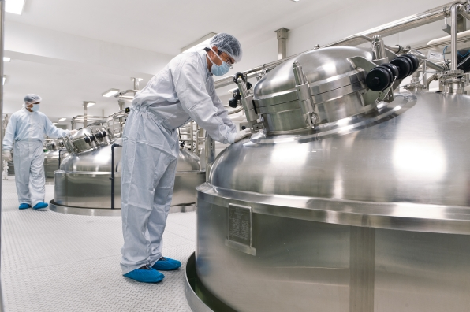

Молоко / Пиво / Напитки
Молоко / Пиво / Напитки
Широкий, постоянно растущий ассортимент продукции, высокие гигиенические стандарты, жесткие законодательные нормы - все эти требования сегодня предъявляются предприятиям молочной промышленности. Управление всеми производственными процессами должно быть надежным, сквозным, должно включать в себя функции контроля и анализа.
Для разработки действительно "умной" автоматизации для предприятий молочной промышлености требуется не только системное Know-how, но и доскональное знание технологии переработки молока и комплексные знания о производственных процессах. Благодаря нашему более, чем 20-летнему опыту мы точно знаем, как выполнить все требования современного молочного производства. Кадровая структура нашей компании предусматривает наличие специализированных отделов, работающих каждый в своей отрасли. "Молочное направление" включает в себя большой штат технологов, инженеров-электриков, программистов, специалистов-пищевиков.
Наша система управления Plant iT является наилучшим решением для предприятий переработки молока и сыроделен. Нам доверяют управление производством такие транснациональные компании, как Almarai, Danone, Bauer, Müller, NÖM, Friesland Campina. В России система Plant iT является корпоративным стандартом для компании Вимм-Билль-Данн - крупнейшего в нашей стране переработчика молока.